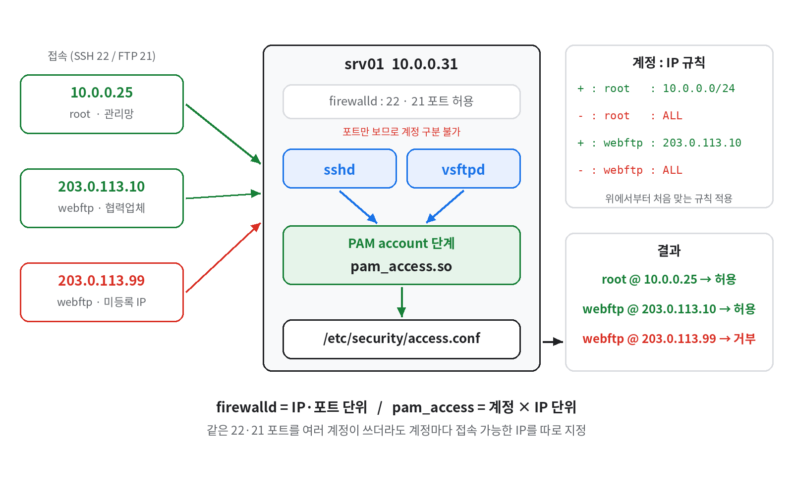
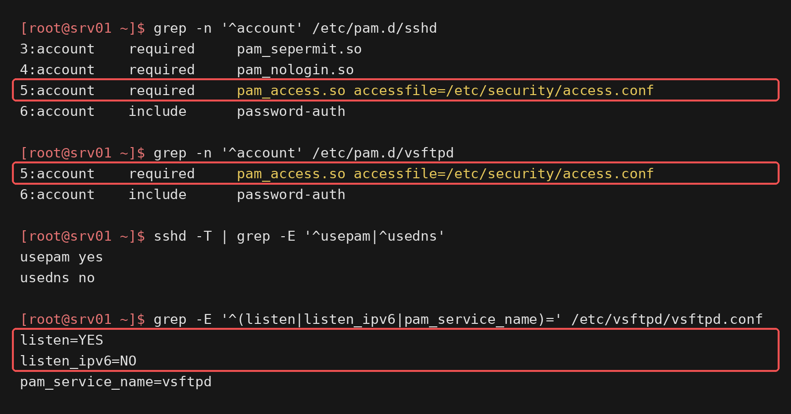
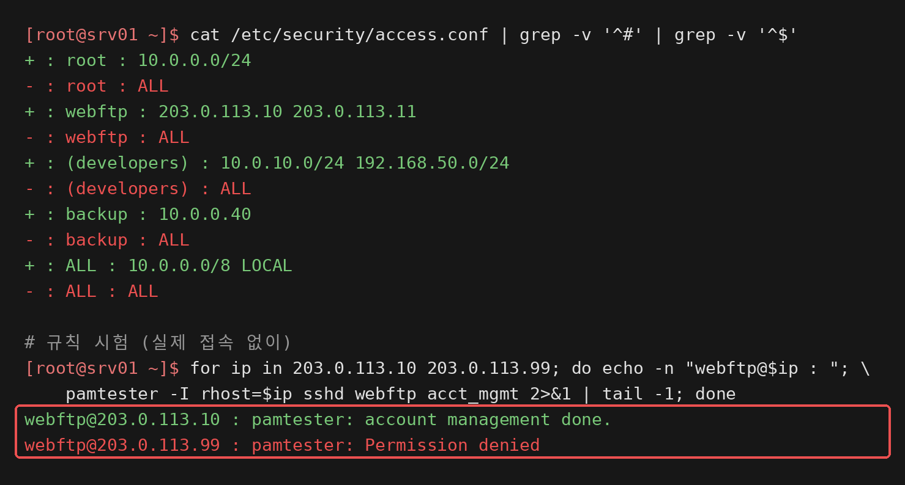
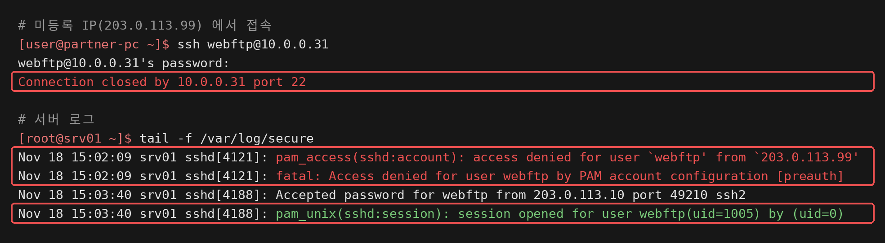
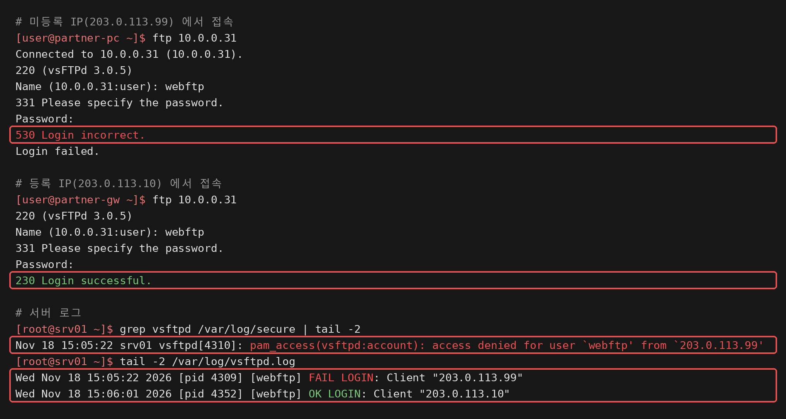

보안 점검·하드닝
계정별 접속 IP 제한 (pam_access) — SSH · FTP
SSH와 FTP를 여러 계정이 함께 쓰는 서버에서 "root는 관리망에서만, 업로드 계정은 협력업체 IP에서만"처럼 계정마다 접속 IP를 다르게 허용해야 했습니다. firewalld는 IP와 포트만 보기 때문에 계정을 구분할 수 없어서, PAM의 pam_access 모듈과 /etc/security/access.conf로 계정 × IP 정책을 적용했습니다.
1. 왜 firewalld로는 안 되나

| 방법 | 판단 기준 | SSH | FTP | 비고 |
|---|---|---|---|---|
| firewalld | IP · 포트 | ○ | ○ | 계정을 모름. IP 전체 차단에 사용 |
sshd AllowUsers user@IP | 계정 · IP | ○ | × | SSH 전용, 규칙이 sshd_config에 섞임 |
tcp_wrappers (hosts.allow) | IP · 서비스 | RHEL 8부터 제거됨 | 사용 불가 | |
| pam_access | 계정 · 그룹 · IP | ○ | ○ | PAM을 쓰는 모든 서비스에 같은 규칙 적용 |
2. PAM 설정: 서비스에 pam_access 연결
PAM은 auth(비밀번호 확인) → account(이 계정이 지금 들어와도 되는지) → session 순서로 동작합니다. 접속 IP 제한은 account 단계에 넣습니다.
/etc/pam.d/sshd
#%PAM-1.0
auth substack password-auth
auth include postlogin
account required pam_sepermit.so
account required pam_nologin.so
account required pam_access.so accessfile=/etc/security/access.conf
account include password-auth
password include password-auth
.../etc/pam.d/vsftpd
#%PAM-1.0
session optional pam_keyinit.so force revoke
auth required pam_listfile.so item=user sense=deny file=/etc/vsftpd/ftpusers onerr=succeed
auth required pam_shells.so
auth include password-auth
account required pam_access.so accessfile=/etc/security/access.conf
account include password-auth
session required pam_loginuid.so
session include password-auth
password-auth / system-auth가 아니라 서비스 파일에 넣은 이유
- Rocky·RHEL 8 이후
password-auth,system-auth는 authselect가 관리합니다. 직접 고치면authselect apply-changes때 덮어써집니다. authselect enable-feature with-pamaccess를 쓰면 pam_access가 공통 파일에 들어가 콘솔 로그인, su 등 모든 서비스에 적용됩니다. SSH·FTP만 제한하려면 서비스 파일에 넣는 쪽이 범위가 정확합니다.
서비스 쪽 확인 사항
# sshd: PAM 을 거치도록 (Rocky 기본 yes), IP 를 이름으로 바꾸지 않도록
# /etc/ssh/sshd_config
UsePAM yes
UseDNS no
# vsftpd: PAM 서비스 이름과 IPv4 대기
# /etc/vsftpd/vsftpd.conf
pam_service_name=vsftpd
listen=YES
listen_ipv6=NO
systemctl restart sshd vsftpd
vsftpd
listen_ipv6=YES 주의: Rocky 기본값은 IPv6 소켓 하나로 IPv4도 받는 방식이라, 접속 IP가 ::ffff:203.0.113.10 형태로 PAM에 전달됩니다. 이러면 access.conf의 IPv4 규칙과 맞지 않아 허용한 IP도 거부될 수 있습니다. IPv4만 쓴다면 listen=YES, listen_ipv6=NO로 바꿉니다.3. /etc/security/access.conf 규칙
형식
권한 : 사용자 : 접속지
+ 허용
- 거부| 칸 | 쓸 수 있는 값 |
|---|---|
| 권한 | + 허용, - 거부 |
| 사용자 | 계정 이름(webftp), 그룹((developers) 괄호), ALL, ALL EXCEPT root. 여러 개는 공백으로 구분 |
| 접속지 | IP(203.0.113.10), 대역(10.0.0.0/24), IP 앞부분(10.0.10. 점으로 끝냄), LOCAL(콘솔 등 원격이 아닌 접속), ALL |
위에서부터 차례로 보고 처음 맞는 규칙을 적용합니다. 맞는 규칙이 하나도 없으면 허용입니다. 그래서 계정마다 "허용 → 나머지 거부" 두 줄을 한 쌍으로 쓰고, 마지막에 전체 기본 정책을 둡니다.
적용한 정책 예
# /etc/security/access.conf
# 관리자: 관리망에서만
+ : root : 10.0.0.0/24
- : root : ALL
# 웹 업로드 계정(FTP·SFTP): 협력업체 IP 만
+ : webftp : 203.0.113.10 203.0.113.11
- : webftp : ALL
# 개발자 그룹: 개발망과 VPN 대역
+ : (developers) : 10.0.10.0/24 192.168.50.0/24
- : (developers) : ALL
# 백업 계정: 백업 서버에서만
+ : backup : 10.0.0.40
- : backup : ALL
# 그 외 모든 계정: 사내망과 콘솔만
+ : ALL : 10.0.0.0/8 LOCAL
- : ALL : ALL| 접속 | 처음 맞는 규칙 | 결과 |
|---|---|---|
| root @ 10.0.0.25 | + : root : 10.0.0.0/24 | 허용 |
| root @ 203.0.113.10 | - : root : ALL | 거부 |
| webftp @ 203.0.113.10 | + : webftp : 203.0.113.10 ... | 허용 |
| webftp @ 203.0.113.99 | - : webftp : ALL | 거부 |
| kim(developers) @ 192.168.50.7 | + : (developers) : ... | 허용 |
| hong(일반) @ 10.20.1.5 | + : ALL : 10.0.0.0/8 LOCAL | 허용 |
| hong(일반) @ 8.8.8.8 | - : ALL : ALL | 거부 |
SSH와 FTP 규칙을 다르게 하고 싶으면 파일을 나눕니다. 예를 들어
/etc/pam.d/vsftpd에서 accessfile=/etc/security/access-ftp.conf로 지정하면, webftp는 FTP는 허용하고 SSH는 전부 막는 식으로 따로 관리할 수 있습니다.access.conf는 접속할 때마다 읽으므로, 규칙을 바꾸면 서비스 재시작 없이 바로 적용됩니다.
4. 적용 전 시험
규칙을 잘못 쓰면 root를 포함해 모든 SSH 접속이 막힐 수 있습니다. 기존 SSH 세션 하나를 열어 둔 채, 새 창에서 접속을 시험하고 확인한 뒤에 기존 세션을 닫습니다. 원격 콘솔(iDRAC·iLO)도 준비해 둡니다.
# pamtester (EPEL) 로 실제 접속 없이 계정 × IP 판정 확인
dnf install -y epel-release && dnf install -y pamtester
pamtester -I rhost=203.0.113.10 sshd webftp acct_mgmt # 허용 예상
pamtester -I rhost=203.0.113.99 sshd webftp acct_mgmt # 거부 예상
pamtester -I rhost=203.0.113.99 vsftpd webftp acct_mgmt
# 판정 과정을 자세히 보고 싶을 때: pam_access 에 debug 를 붙이면 /var/log/secure 에 기록
account required pam_access.so accessfile=/etc/security/access.conf debug5. 동작 확인
SSH
허용되지 않은 IP에서는 비밀번호를 맞게 입력해도 바로 연결이 끊깁니다. 클라이언트에는 이유가 나오지 않고, 서버 /var/log/secure에 남습니다. SSH 키 인증도 account 단계를 거치므로 똑같이 막힙니다.

pam_access ... access denied / 등록 IP: 정상 로그인 (예시 화면)FTP
FTP 클라이언트에는 비밀번호가 틀렸을 때와 같은 530 Login incorrect.가 나옵니다. 비밀번호 문제인지 IP 제한인지는 서버 로그로 구분합니다.

/var/log/secure의 pam_access 줄로 IP 제한 때문임을 확인 (예시 화면)# 거부 기록만 모아 보기
grep 'pam_access' /var/log/secure | grep 'access denied'
# 계정·IP 별 거부 횟수
grep 'pam_access.*access denied' /var/log/secure \
| sed -E "s/.*user .(\S+). from .(\S+)'.*/\1 \2/" | sort | uniq -c | sort -rn6. 함께 쓰면 좋은 설정
- firewalld와 역할 나누기: pam_access는 "로그인"을 막을 뿐, 접속 자체와 비밀번호 입력 시도는 서비스까지 들어옵니다. 어떤 계정으로도 쓸 일이 없는 IP·국가 대역은 firewalld(ipset)에서 먼저 막습니다.
- 로그인 실패 잠금: 비밀번호 대입 시도는 PAM 비밀번호 정책(faillock)으로 계정을 잠급니다.
- FTP 계정은 셸 제한: 업로드 전용 계정은
/sbin/nologin셸과 vsftpdchroot_local_user=YES로 홈 디렉터리 밖을 보지 못하게 합니다. 이때pam_shells.so가 nologin을 거부하므로/etc/shells에/sbin/nologin을 추가하거나 해당 줄을 조정합니다. - SFTP: SFTP는 sshd를 통하므로
/etc/pam.d/sshd규칙이 그대로 적용됩니다.
7. 트러블슈팅
| 증상 | 원인 및 해결 |
|---|---|
| 규칙을 넣었는데 아무 효과 없음 | 서비스 PAM 파일에 pam_access가 없거나 auth 줄에 넣음 → account로. sshd는 UsePAM yes 확인 |
| 허용한 IP도 FTP 거부 | vsftpd listen_ipv6=YES로 IP가 ::ffff: 형태로 전달됨 → IPv4 대기로 변경 |
| 접속이 느리고 가끔 거부 | 접속지 칸에 호스트 이름을 쓰거나 UseDNS yes → DNS 조회 지연. IP로만 작성, UseDNS no |
| root가 콘솔에서도 못 들어감 | access.conf는 서비스 파일에 넣은 SSH·FTP에만 적용됨. 콘솔까지 막혔다면 authselect with-pamaccess가 켜져 있는지 확인. 콘솔용으로 LOCAL 허용 줄 추가 |
| 그룹 규칙이 안 맞음 | 그룹은 괄호 필수 (developers). 괄호 없이 쓰면 그 이름의 계정으로 해석 |
| 대역 앞부분 규칙이 다른 대역까지 허용 | 10.0.1처럼 점 없이 쓰면 10.0.10.x, 10.0.100.x도 맞음 → 10.0.1. 또는 10.0.1.0/24 |
| FTP 530인데 비밀번호는 맞음 | /var/log/secure에 pam_access 거부가 있으면 IP 제한, 없으면 ftpusers·pam_shells 확인 |